The human's latest imageboard direction supersedes the historical exact-photo target. All rows/counts/media are unchanged synthetic inputs. Native 360/390/430 × 843 and candidate 480px-short checks passed. This is not live admission or qualification of owner209's newer integration or owner213's new chrome.
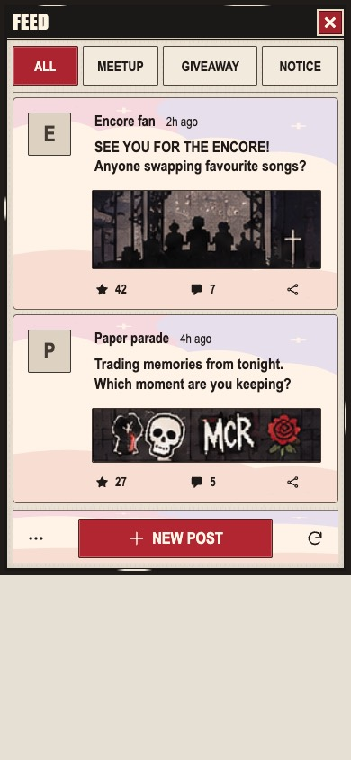
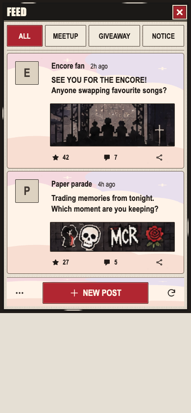
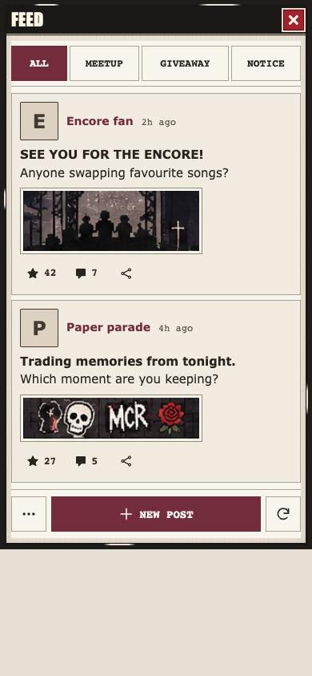
Photo 2 is historical component context. The latest human direction supersedes literal foreground matching. This original is preserved byte for byte.
The default-shell fixture still uses older shared chrome and a different single fixture post. Its narrow pink shell-body inset is outside feed.css ownership; Root has the exact selector. The standalone fixture has a fixed frame and is not a viewport-height model.
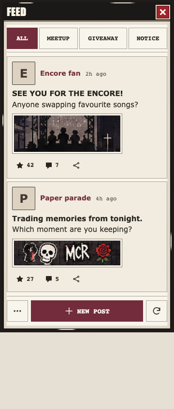
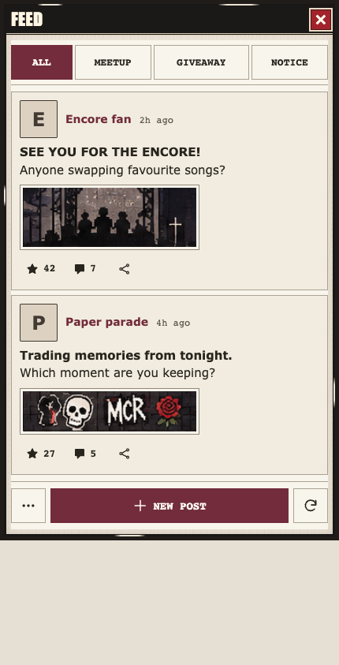
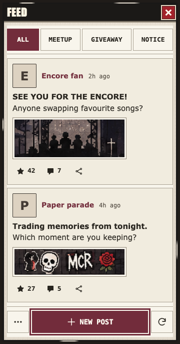
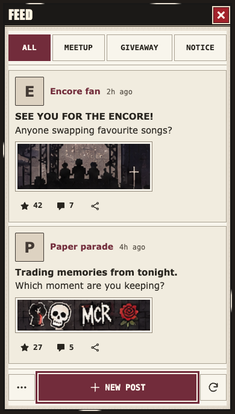
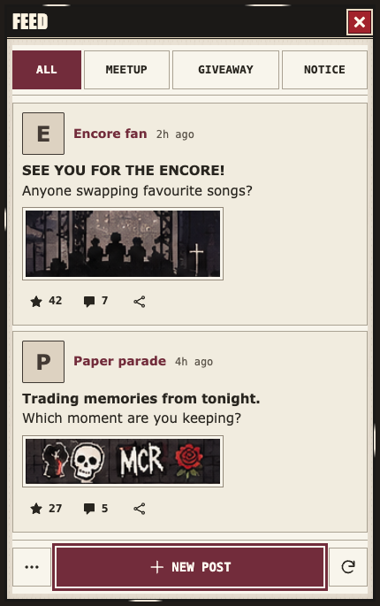
The default-shell fixture still uses older shared chrome and a different single fixture post. Its narrow pink shell-body inset is outside feed.css ownership; Root has the exact selector. The standalone fixture has a fixed frame and is not a viewport-height model.
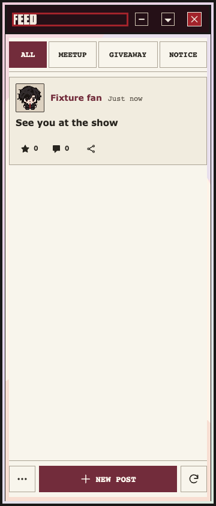
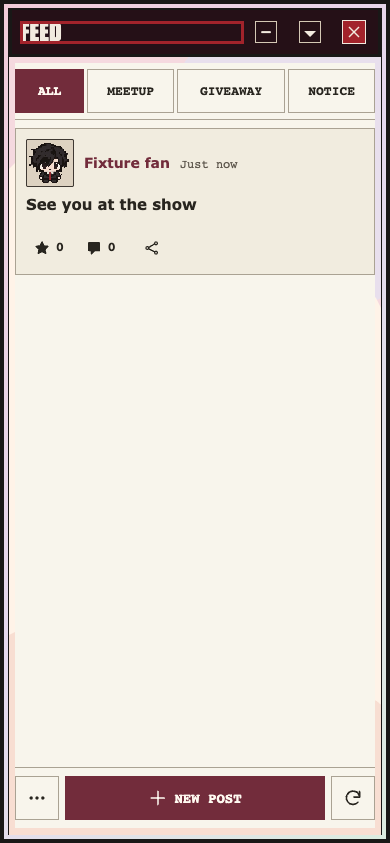
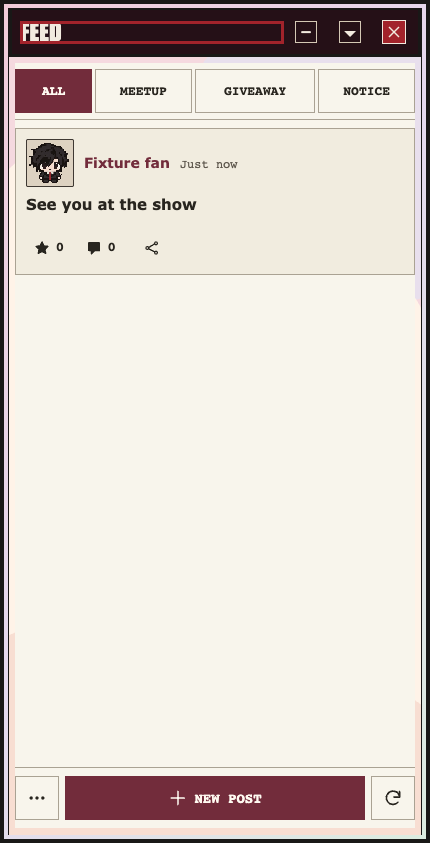
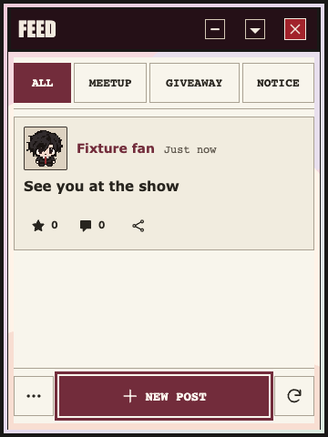
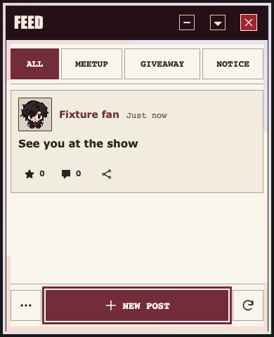
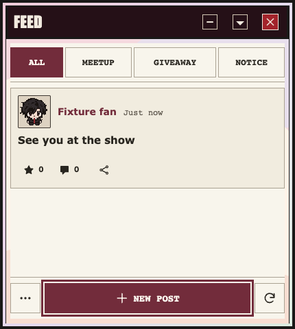
Raw native report · Automatic release receipt. CSS SHA-256: 14424bc829a47e3e4d0f28ac5c3fe59a6e07df6548906af4cb520407eceb5ef8.